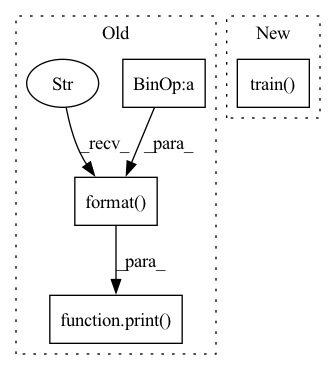

Pattern ID :36665
Before Change
for batch_features, batch_labels in load_preprocess_training_batch(batch_i, batch_size):
self.train_neural_network(sess, optimizer, keep_probability, batch_features, batch_labels)
print( "Epoch {:>2}, CIFAR-10 Batch {}: ".format( epoch + 1, batch_i), end="")
self.print_stats(sess, batch_features, batch_labels, cost, accuracy)
def train_neural_network(self, session, optimizer, keep_probability, feature_batch, label_batch):
session.run(optimizer, After Change
self.init = tf.global_variables_initializer()
// saver = tf.train.Saver(tf.trainable_variables())
self.train( X_train, Y_train, sess, epochs, dropout, batch_size, learning_rate)
def train(self, X_train, Y_train, sess, epochs, dropout=0.75, batch_size=128, learning_rate=0.001):
display_step = 50 //显示间隔
sess.run(self.init)In pattern: SUPERPATTERN
Frequency: 3
Non-data size: 4
Instances Fragment ID: 104724697
Project Name: skylark0924/machine-learning-is-all-you-need
Commit Name: f91f2780d4fd91d4d9e8bee96bed181857bb450f
Time: 2020-04-23
Author: l.syj@163.com
File Name: 10CNN/CNN_models.py
M Class Name: TF_CNN
N Class Name: TF_CNN
M Method Name: fit(8)
N Method Name: fit(6)
M Parent Class:
N Parent Class:
M File Name: 10CNN/CNN_models.py
N File Name: 10CNN/CNN_models.py
M Start Line: 269
M End Line: 301
N Start Line: 272
N End Line: 293
Before Change
optimizer.step()
print(y_hat)
print(y)
print( "epoch {},avg_loss={:.4f}".format( e,all_lose/(train_df.shape[0]// batchSize)))
// //评估模型
// if e % eva_per_epochs == 0:
// p, r, acc = doEva(net, x_train, y_train)After Change
net = Linear_Reg(train_df.shape[1]-1) // 初始化线性回归模型
criterion = torch.nn.MSELoss() //平方差损失函数
optimizer = torch.optim.SGD( net.parameters(), lr=lr) //随机梯度下降
net.train()
for e in range(epochs):
for datas in DataLoader(train_df.values, batch_size = batchSize, shuffle = True):
optimizer.zero_grad() //梯度归0
X = datas[:,:-1] // 获取X Fragment ID: 104724693
Project Name: rexrex9/basic_neural_networks_pytorch
Commit Name: fca99667bfbb814e5225d4b9a45fa378e00f27a6
Time: 2022-03-09
Author: 547102444@qq.com
File Name: chapter1/s5_boston_price_predict.py
M Class Name: AnonimousClass
N Class Name: AnonimousClass
M Method Name: train(3)
N Method Name: train(3)
M Parent Class:
N Parent Class:
M File Name: chapter1/s5_boston_price_predict.py
N File Name: chapter1/s5_boston_price_predict.py
M Start Line: 26
M End Line: 45
N Start Line: 46
N End Line: 63
Before Change
loss_sum += loss.detach().item()
print( "Client[{}] Traning. Epoch {}/{}, Loss {:.4f}, Time {:.2f}s".
format( id, epoch + 1, epochs, loss_sum,
time() - time_begin))
return SerializationTool.serialize_model(model)
def train(self, model_parameters, epochs, lr, batch_size, id_list, cuda):
Train local model with different dataset according to id in id_list.After Change
epochs = 5
criterion = torch.nn.CrossEntropyLoss()
optimizer = torch.optim.SGD(self._model.parameters(), lr=0.1)
self._model.train()
for _ in range(epochs):
for data, target in data_loader: Fragment ID: 104724695
Project Name: smilelab-fl/fedlab
Commit Name: 16befdf9173a4b4f4430f456b5353765c6d4d3e3
Time: 2021-08-08
Author: 928255708@qq.com
File Name: fedlab/core/client/serial_trainer.py
M Class Name: SerialTrainer
N Class Name: SerialTrainer
M Method Name: _train_alone(4)
N Method Name: _train_alone(8)
M Parent Class: ClientTrainer
N Parent Class: ClientTrainer
M File Name: fedlab/core/client/serial_trainer.py
N File Name: fedlab/core/client/serial_trainer.py
M Start Line: 102
M End Line: 137
N Start Line: 98
N End Line: 119